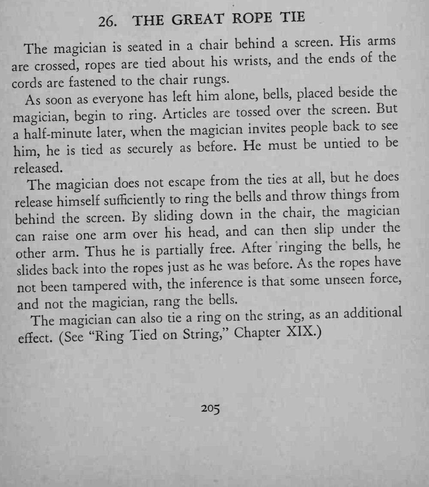
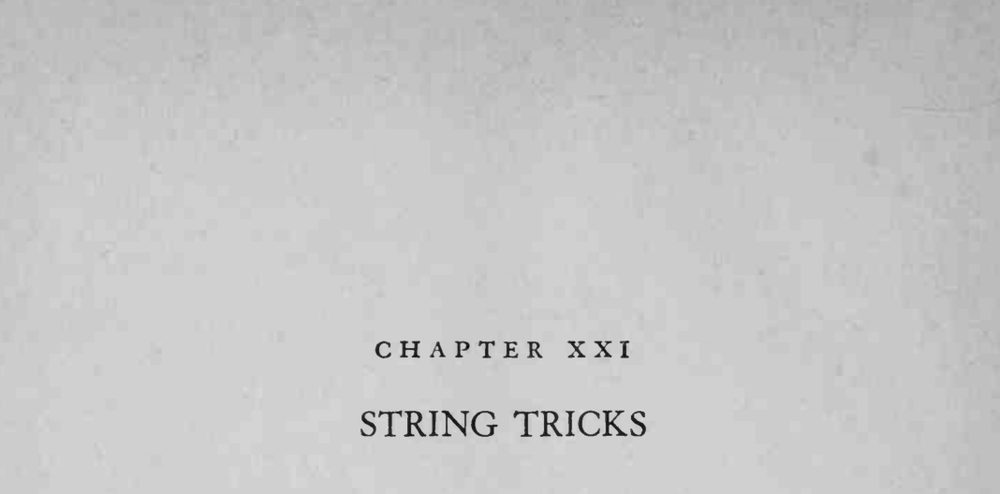

魔术师被绳子牢牢绑在椅子上、躲到屏风后面，众人离开后半分钟里铃铛大作、小东西不断飞过屏风；再去看时，他仍然被绑得和原来一样紧。
绳结的松紧要事先量好，复原要快，绝不能让绳圈有被移动过的痕迹。


The magician seated in a chair behind a screen. His arms ropes are tied about his wrists, and the ends of the are crossed, cords are fastened to the chair rungs. As soon as everyone has left him alone, bells, placed beside the magician, begin to ring. Articles are tossed over the screen. But when the magician invites people back to see a half-minute later, before. He must be untied to be him, he is tied as securely as released. The magician does not escape from the ties at all, but he does himself sufficiently to ring the bells and throw things from release behind the screen. By sliding down in the chair, the magician can one arm over his head, and can then slip under the raise arm. Thus he partially free. After ringing the bells he other is back into the ropes just as he was before. As the ropes have slides not been tampered with, the inference is that some unseen force, and not the magician, rang the bells. The magician can also tie a ring on the string, as an additional (See "Ring Tied on String," Chapter XIX.) effect.